OIL COOLER > INSTALLATION |
| 1. INSTALL OIL COOLER ASSEMBLY |
 |
Connect the oil cooler inlet hose and outlet hose.
 |
Install the rear transmission oil cooler air duct with the 4 bolts, and then install the air cooled oil cooler tube to the transmission oil cooler air duct with the bolt.
 |
Temporarily put the oil cooler on the radiator support.
Install the 4 bolts in the sequence shown in the illustration.
| 2. INSTALL TRANSMISSION OIL COOLER AIR DUCT |
 |
Install the oil cooler air duct with the 4 bolts in the sequence shown in the illustration.
| 3. INSTALL OIL COOLER TUBE SUB-ASSEMBLY (for 2UZ-FE) |
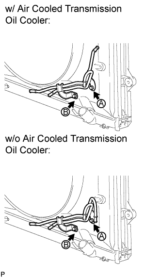 |
Temporarily install the oil cooler tube to the fan shroud with bolt A. Install bolt B and tighten it to the specified torque. Then tighten bolt A to the specified torque.
| 4. INSTALL OIL COOLER TUBE SUB-ASSEMBLY (for 1GR-FE) |
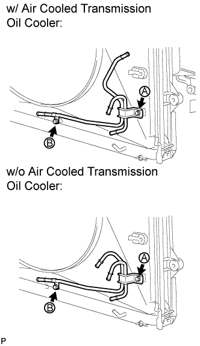 |
Temporarily install the oil cooler tube to the fan shroud with bolt A. Install bolt B and tighten it to the specified torque. Then tighten bolt A to the specified torque.
| 5. CONNECT INLET NO. 4 OIL COOLER HOSE (for 2UZ-FE) |
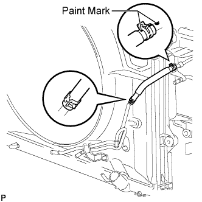 |
Connect the inlet oil cooler hose as shown in the illustration.
| 6. CONNECT INLET NO. 4 OIL COOLER HOSE (for 1GR-FE) |
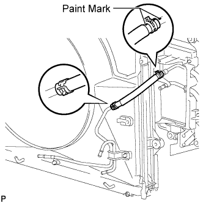 |
Connect the inlet oil cooler hose as shown in the illustration.
| 7. CONNECT INLET NO. 2 OIL COOLER HOSE AND INLET NO. 3 OIL COOLER HOSE (for 2UZ-FE) |
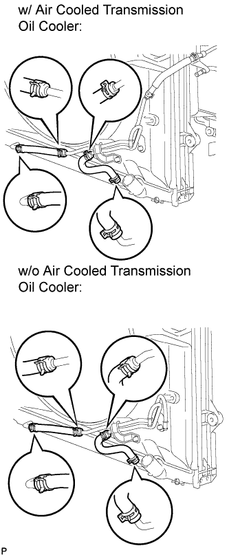 |
Connect the oil cooler hoses as shown in the illustration.
| 8. CONNECT INLET NO. 2 OIL COOLER HOSE AND INLET NO. 3 OIL COOLER HOSE (for 1GR-FE) |
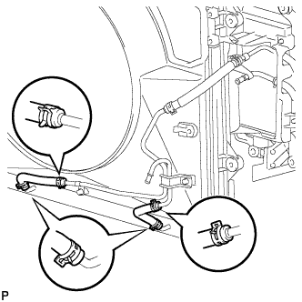 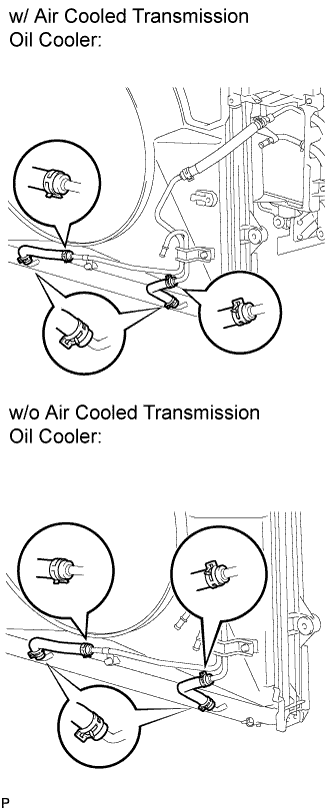 |
Connect the 2 transmission oil cooler hoses as shown in the illustration.
| 9. CONNECT INLET NO. 1 OIL COOLER HOSE AND OUTLET NO. 1 OIL COOLER HOSE (for 2UZ-FE) |
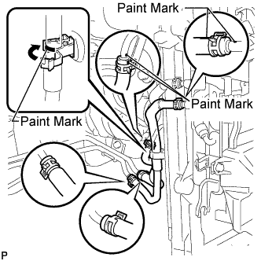 |
w/ Air Cooled Transmission Oil Cooler:
Connect the 2 oil cooler hoses as shown in the illustration.
Pass the hose through the flexible hose clamp and close the clamp shown in the illustration.
w/o Air Cooled Transmission Oil Cooler:
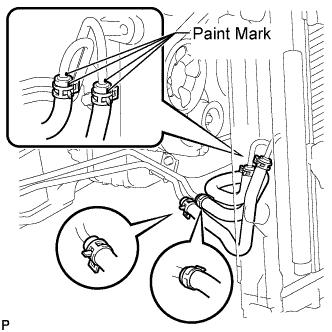 |
Connect the 2 oil cooler hoses as shown in the illustration.
| 10. CONNECT INLET NO. 1 OIL COOLER HOSE AND OUTLET NO. 1 OIL COOLER HOSE (for 1GR-FE) |
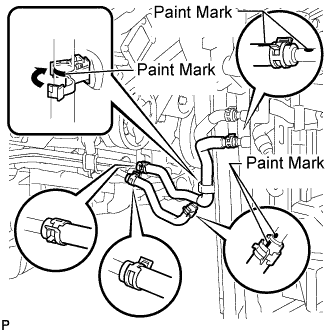 |
w/ Air Cooled Transmission Oil Cooler:
Connect the 2 oil cooler hoses as shown in the illustration.
Pass the hose through the flexible hose clamp and close the clamp shown in the illustration.
w/o Air Cooled Transmission Oil Cooler:
Connect the 2 oil cooler hoses as shown in the illustration.
| 11. CONNECT TRANSMISSION OIL COOLER HOSE (for 2UZ-FE) |
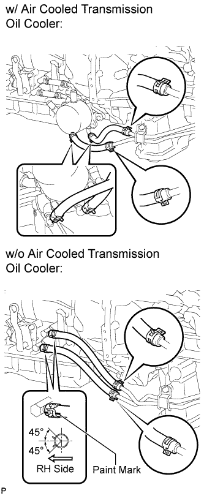 |
Connect the 2 transmission oil cooler hoses as shown in the illustration.
| 12. CONNECT TRANSMISSION OIL COOLER HOSE (for 1GR-FE) |
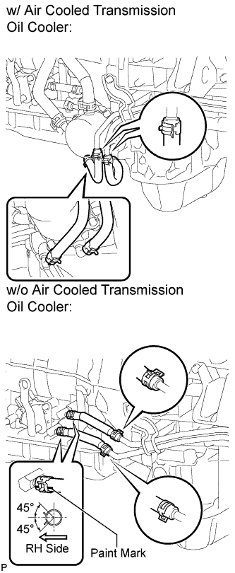 |
Connect the 2 transmission oil cooler hoses as shown in the illustration.
| 13. ADD AUTOMATIC TRANSMISSION FLUID |
Add automatic transmission fluid (Click here).
| 14. INSTALL HEADLIGHT ASSEMBLY RH (w/ Air Cooled Transmission Oil Cooler) |
Install the headlight RH (Click here).
| 15. INSTALL FRONT BUMPER ASSEMBLY (w/ Air Cooled Transmission Oil Cooler) |
for Standard:
Install the front bumper (Click here)
w/ Winch:
Install the front bumper (Click here).
| 16. INSTALL FRONT FENDER APRON SEAL REAR RH |
 |
Install the fender apron seal with the 4 clips.
| 17. INSTALL FRONT FENDER APRON SEAL FRONT RH |
 |
Install the fender apron seal with the 3 clips.
| 18. INSTALL NO. 1 ENGINE UNDER COVER |
 |
Install the under cover with the 6 bolts.
| 19. INSTALL NO. 2 ENGINE UNDER COVER |
 |
Install the under cover with the 6 bolts.
| 20. INSTALL FRONT FENDER SPLASH SHIELD SUB-ASSEMBLY LH |
 |
Push in the clip indicated by the arrow in the illustration to install the fender splash shield.
Install the 3 bolts and screw.
| 21. INSTALL FRONT FENDER SPLASH SHIELD SUB-ASSEMBLY RH |